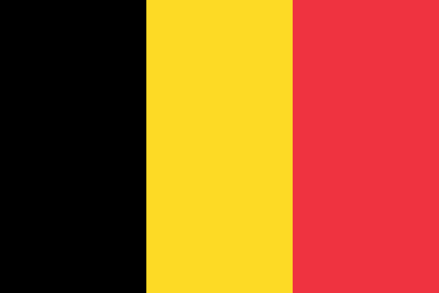

Belgium
Native Name: België
Population: 11,319,511
Region: Europe
Sub Region: Western Europe
Capital: Brussels
Top Level Domain: .be
Currencies: Euro
Languages: Dutch, French, German
Border Counteries: